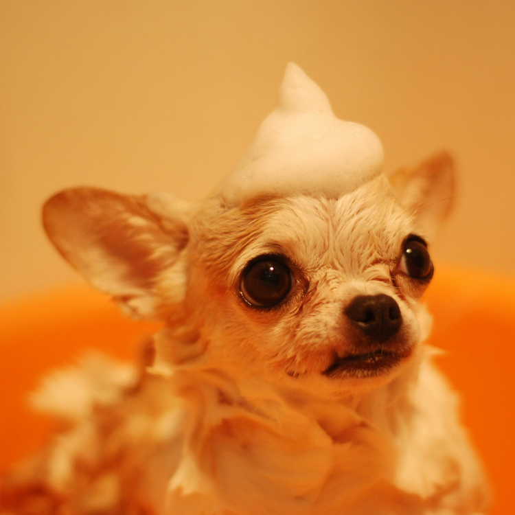

How to Choose the Best Pet Shampoo: Golden Rules for Keeping Your Pet’s Skin and Coat Healthy

As more pet owners opt for at-home baths, selecting the right pet shampoo becomes crucial. With numerous options available, from budget-friendly to high-end products, understanding how to choose a suitable shampoo is essential for maintaining your pet’s skin and coat health. This guide will help you navigate the complexities of pet shampoos and ensure your furry friend receives the best care.
Why Is Choosing the Right Shampoo So Important?
Selecting the right shampoo is not just a matter of preference—it’s vital for your pet’s health. Unlike human shampoos, pet shampoos are formulated to meet the specific needs of your dog or cat’s skin and coat. Here’s why:
- Skin Sensitivity: Pets have more sensitive skin than humans. Choosing a suitable shampoo helps prevent irritation, dryness, and allergic reactions.
- Coat Health: Proper shampoos help maintain a shiny, healthy coat, reducing shedding and dryness.
- Preventing Infections: Some shampoos have antibacterial or antifungal properties, protecting pets from skin infections.
1. Choose Shampoos Specifically Designed for Pets
Differences Between Human and Pet Skin
Pet skin differs from human skin in pH balance, thickness, and sensitivity. While human shampoos have a pH level of 4.5 to 5.5, pets’ skin is more neutral, around 6.5 to 7.5. Using human shampoo on pets can disrupt their skin’s natural oils, causing irritation, flakiness, and dryness.
Why It Matters:
- pH Balance: Pet shampoos are designed to maintain the natural pH of your pet’s skin.
- Skin Health: Helps prevent dryness, itching, and skin infections.
2. Avoid Harmful Ingredients
Avoiding Irritants
Some ingredients commonly found in shampoos can harm your pet’s skin. Always check labels and avoid the following:
- Sulfates: Sodium Lauryl Sulfate (SLS) and Sodium Laureth Sulfate (SLES) can strip your pet’s skin of essential oils, leading to dryness and irritation.
- Artificial Fragrances: These can cause allergies and skin reactions. Look for shampoos with natural, pet-safe scents like lavender or oatmeal.
- Artificial Colorants: Often unnecessary and can lead to skin irritation. Opt for color-free shampoos.
- Preservatives: Avoid Parabens and Methylisothiazolinone, which can trigger allergic reactions.
- Alcohol: High alcohol content can dry out your pet’s skin, causing discomfort.
3. Opt for Shampoos with Beneficial Ingredients
Supporting Skin Health
To promote skin health, choose shampoos with ingredients that nourish and protect. Look for:
- Ceramides: Help maintain the skin’s barrier function, keeping it moisturized and protected from irritants.
- Oatmeal and Aloe Vera: Naturally soothe and hydrate your pet’s skin, especially beneficial for sensitive pets.
- Vitamin B5 (Panthenol): Moisturizes and promotes a healthy coat.
Benefits of Ceramides:
- Moisture Retention: Helps maintain hydration and protect the skin from environmental damage.
- Skin Barrier Support: Enhances the natural protective barrier of the skin.
4. Consider Fragrance Sensitivity
Sensitivity to Scents
While scented shampoos can be pleasant, strong fragrances may overwhelm your pet’s sensitive nose. Choose products with light, natural fragrances to ensure your pet remains comfortable during and after baths.
Fragrance Tips:
- Mild Scents: Opt for shampoos with subtle, natural scents like chamomile or lavender.
- Pet Comfort: Avoid overpowering fragrances that could cause stress or irritation.
Summary
When choosing a pet shampoo, prioritize products that are pH-balanced for pets, free from harmful chemicals, and enriched with beneficial ingredients like ceramides and Vitamin B5. By selecting the right shampoo, you’ll protect your pet’s skin and coat, ensuring they stay healthy and comfortable.
Product Recommendations
Here are selected products from Amazon to assist in your decision-making. Links may contain affiliate marketing programs, where clicking and purchasing may generate a small commission for us (at no additional cost to you), helping maintain our website operations.
1. Arm & Hammer Super Deodorizing Shampoo For Dogs Purchase Here
- Odor Control: Contains baking soda for natural odor elimination.
- Moisturizing: Includes cucumber mint to hydrate the skin.
- pH Balanced: Specifically formulated for dog skin, preventing irritation.
- Gentle Scent: Kiwi blossom scent from natural sources.
2. Wahl USA Dry Skin & Itch Relief Pet Shampoo for Dogs Purchase Here
- Oatmeal Formula: Helps soothe dry, itchy skin.
- Allergy-Friendly: Free from alcohol, parabens, and artificial colors.
- Economical: Higher concentration of ingredients means a little goes a long way.
- Veterinary Approved: Recommended by vets for sensitive skin.
3. Wahl USA 4-in-1 Calming Pet Shampoo for Dogs Purchase Here
- 4-in-1 Formula: Cleans, conditions, detangles, and moisturizes.
- Calming Scent: Lavender chamomile scent helps relax anxious pets.
- Safe Ingredients: pH balanced and free from harmful additives.
Conclusion
By choosing the right pet shampoo, you can ensure your pet’s skin and coat remain healthy and clean. Avoid shampoos with harmful chemicals and look for products enriched with natural ingredients like oatmeal and ceramides to promote your pet’s well-being. Regular grooming with the right shampoo will leave your pet feeling refreshed and looking their best.
Want to gain a deeper understanding of dog care and grooming? Check out more informative articles: read more related articles
Looking for the best products for your pets? Explore detailed product guides and recommendations: Explore more articles